의공산업기사 (2016-10-01 기출문제)
1과목: 기초의학 및 의공학
1. Operational Amlifier의 특징이 아닌 것은?
- 입력 측 임피던스가 매우 작다.
- 출력 측 임피던스가 매우 작다.
- 증폭률이 항상 일정하다.
- negative feedback이 됐을 때, 반전 입력과 비 반전 입력의 전압이 같다.
(정답률: 75%)

2. 다음 중 세포막이 안정막 전의에 대한 설명 중 바르지 않은 것은?
- 세포막은 여러 종류의 이온에 대해 투과성을 나타낸다.
- 이온의 농도가 증가하면 막전위에 대한 기여도가 증가한다.
- 세포막을 통과하는 이온들은 직접적으로 막전위에 관여하지 않는다.
- 세포의 안정막 전의는 일반적으로 -65mV ~ -85mV이다.
(정답률: 85%)
3. 전극과 전해질의 경계면에서 전류가 흐르지 않을 때, 전기적 중성상태가 깨어지면서 전극의 주변은 용액의 다른 부분과는 다른 전위를 나타내는데 이를 무엇이라고 하는가?
- 변위전류(displacement current)
- 반전지 전위(half-ceii potential)
- 과전위(overpotenial)
- 오프셋 전위(offset potential)
(정답률: 72%)
4. 광 센서 관련 기술 중 표면 플라즈몬 공면(surface plasmon resonance)에 대한 설명으로 틀린 것은?
- 표면 플라즈몬은 금속박막 표면에서 일어나는 전자들의 집단적인 진동현상을 말한다.
- 표면 플라즈몬파는 금속과 이에 인접하는 유전물질의 경계면을 따라 진해하는 표면 전자기파이다.
- 표면 플라즈몬 공면은 굴절률의 면화를 측정하는 생체물질의 상호작용을 인지할 수 있다.
- 표면 플라즈몬 공명법은 형광물질과 같은 별도의 표지물질이 필요하다.
(정답률: 92%)
5. 용량성 센서에 대한 설명으로 옳은 것은?
- 변위를 주로 측정한다.
- 전합 반도체의 특성을 이용한다.
- 물리적 압력이 가해지면 전압을 발생시킨다.
- 온도에 따라 저항이 변화하는 특성을 이용한다.
(정답률: 93%)
6. 다음 전극의 분류 중 사용 부위에 따른 분류가 아닌 것은?
- 표면 전극
- 습윤 전극
- 미세 전극
- 두피용 전극
(정답률: 86%)
7. 광 센서를 이용하여 심박수를 검출할 수 있는 방법은?
- ECG
- EMG
- PPG
- EOG
(정답률: 92%)
8. 다음 중 폐활량의 합산에 들어가지 않는 항목은?
- 잔기량
- 1회 호흡량
- 예비호기량
- 예비흡기량
(정답률: 92%)
9. 다음 ()안에 공통으로 들어갈 내용은?
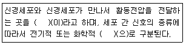
- 축색돌기
- 시냅스
- 뉴런
- 수상돌기
(정답률: 95%)
10. 뇌에서 몸이 평형, 운동 및 근의 긴장도에 관한 감각정보를 담당하며 정상체온을 유지하는 항원 조절기에 해당하는 것은?
- 대뇌
- 간뇌
- 소뇌
- 중뇌
(정답률: 92%)
11. 관절운동의 형태와 그에 대한 설명으로 옳은 것은?
- 굴곡(flection) : 구부리는 것
- 외반(eversion) : 안쪽으로 도는 것
- 내반(inversion) : 바깥쪽으로 도는 것
- 외전(abduction) : 정중면으로 가까워지는 운동
(정답률: 95%)
12. 동잡음(motion artifact)의 원인이 아닌 것은?
- 전극 고정 상태 불량
- 리드선의 움직임에 의한 전극의 움직임
- 전극의 전해질이 건조한 경우
- 유효기간을 초과한 전극 사용
(정답률: 93%)
13. 다음 중 동작방식이 다른 센서는?
- 광다이오드(photodiode)센서
- 광트랜지스터(photo TR)
- 광전지(photosell) 센서
- 광전도성(CdS) 센서
(정답률: 78%)
14. 세포막의 흥분에 대한 설명 중 옳지 않은 것은?
- 활동전위는 전압 차에 의해서 열리고 닫히는 Na+ 및 K+통로를 통한 Na+및 K+통로를 통한 Na+및 K+이온의 이동에 의하여 생긴다.
- 탈분극은 더욱 많은 Na+통로를 열어 더 많은 Na+이 세포내로 들어간다.
- 역치(threshold)는 활동전압을 일으킬 수 있는 최소 자극 강도이다.
- 실무율은 자근이 역치에 도달할 경우 활동전위가 분극을 일으키는 현상으로 역치에 이르지 않아도 분극을 일으킨다.
(정답률: 77%)
15. 다음 ()안에 들어갈 알맞은 것은?
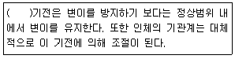
- 적응조절
- 음성되먹이기
- 양성되먹이기
- 순응조절
(정답률: 82%)
16. 생체표면전극에 대한 설명으로 틀린 것은?
- 전극에 금속에서 발생하는 분극전압이 작아야 한다.
- 오랫동안 안정적으로 체표면과의 접촉을 유지하여야 한다.
- 피부와의 저촉 임피던스를 줄이기 위하여 페이스트(paste)를 사용한다.
- 접촉저항은 면적에 비례하기 때문에, 실제 표면에 접촉하는 면적을 줄여야 한다.
(정답률: 91%)
17. 미지의 저항값을 측정하는 용도로 많이 사용되면, 저항성 센서의 저항값의 변화를 검출하고 그 변화를 측정하는 용도로 사용하는 회로는?
- 저항귀한회로
- 스트레인 브릿지
- 캘빈회로
- 휘스톤 브릿지
(정답률: 82%)
18. 다음 소화관 중 길이가 가장 긴 것은?
- 대장(large intestine)
- 십이지장(duodenum)
- 회장(ileum)
- 식도(esophagus)
(정답률: 77%)
19. 전기장을 가했을 때 전기적으로 극성을 띤 분자들이 전체적으로 정렬하여 물체가 전기를 띠는 현상은?
- 변위전류(displacement current)
- 유전 분극(dielectric polariation)
- 반전지 전위(half-cell potential)
- 오프셋 전위(offset potential)
(정답률: 67%)
20. 제벡효과를 이요한 온도 센서로 옳은 것은?
- 서미스터
- 열전쌍
- 금속저항 온도계
- 다이오드
(정답률: 74%)
2과목: 의용전자공학
21. 어떤 연산증폭기에 계단파를 1μs동안 인가하였을 때, 출력전압이 -5V에서 +5V까지 변화하였다면 슬루율(slewrate)은?
- 10V/μs
- -10V/μs
- 20V/μs
- -20V/μs
(정답률: 88%)
22. 아날로그 신호를 디지털 신호로 변환하는 과정을 바르게 나열한 것은?
- 부호화→표본화→양자화
- 부호화→양자화→표본화
- 표본화→부호화→양자화
- 표본화→양자화→부호화
(정답률: 83%)
23. 맥파(pulse wave)의 종류가 아닌 것은?
- 혈루맥파
- 직경맥파
- 압맥파
- 종맥파
(정답률: 73%)
24. 다음()안에 알맞은 용어는?
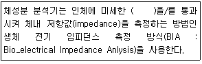
- 전류
- 저주파
- 전압
- 공기
(정답률: 91%)
25. 다음 카르토 맵(Karnaugh map)을 이용한 가장 간단한 논리식은?
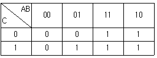
- A+BC
- ABC
- AB+BC+AC
- (A+B)(B+C)(A+C)
(정답률: 90%)
26. 다음 회로의 특성에 대한 설명 중 옳은 것을 모두 나열한 것은?
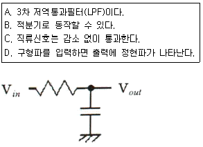
- A, B, C
- B, C
- C, D
- A, D
(정답률: 76%)
27. 일반 매질 내 균등 자게에서의 자속 밀도 Wb/m2는?
- μom
- μγm
- μoH
- μoμγH
(정답률: 84%)
28. 다음 회로와 같이 인가전압이 40V인 회로에서 저항 에 걸리는 전압은 몇V 인가? (단, R1=3Ω, R2=5Ω이다.)
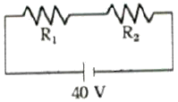
- 15
- 20
- 25.
- 50
(정답률: 86%)
29. 전압, 전류 및 저항의 보조 단위 중 가장 적은 것은?
- P[pcp]
- n[nano]
- T[tera]
- G[giga]
(정답률: 88%)
30. 연산증폭기에 부귀환 회로를 추가하여 전압이득 100매인 비반전 증폭기를 구성하였을 때 부귀화는 효과를 바르게 설명한 것은?
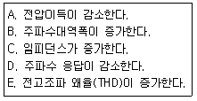
- A, B, C
- A, B, D
- A, B, E
- B, C, E
(정답률: 74%)
31. 무한장 직선 도선에 10A의 전류가 흐르고 있을 때 도선으로부터 1m 떨어진 곳에서 자게의 세기는 몇 A/m인가?
- 1.6
- 2
- 2.4
- 3.2
(정답률: 45%)
32. 인코더의 회로 구성 시 사용되는 게이트는?
- AND 게이트
- OR 게이트
- NOR 게이트
- NAND 게이트
(정답률: 79%)
33. 생체신호 중 아날로그 신호의 일반적인 처리방법이 아닌 것은?
- 증폭
- 합성
- 변조
- 복조
(정답률: 86%)
34. 다음 중 LC직렬회로의 공진 조건으로 옳은 것은?
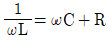
- 직류전원을 가할 때
- ωL=ωC
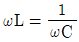
(정답률: 83%)
35. 전력 증폭회로에 대한 설명으로 틀린 것은?
- 전력 증폭기는 최종단에서 스피커나 송신 안테나를 구동하기 위해 사용한다.
- 효율이 좋고 일그러짐이 최소가 되도록 부하 임피던스를 낮게 한다.
- 소신호 증폭으로 입력의 교류 전력을 직류 전력의 출력으로 변환하는 회로이다.
- 일반적으로 A급, B급, C급,AB급이 있다.
(정답률: 71%)
36. 플립플롭에 해당되는 회로는?
- 쌍안정 멀티바이브레이터
- 단안정 멀티바이브레이터
- 무안정 멀티바이브레이터
- 시미트 트리거
(정답률: 91%)
37. 도체의 전기저항에 관련한 사항으로 틀린 것은?
- 저항은 전류의 흐름을 방해하는 요소이다.
- 도체의 전기저항은 단면적과 도전율에 비례한다.
- 컨덕턴스는 전류가 흐르기 쉬운 정도를 나타낸다.
- 오체의 전기저항은 고유저항과 도체 길이에 비레한다.
(정답률: 75%)
38. 디지털 IC 7404의 내부 구조 게이트로 입력 단자에 ‘0’이 입력되면 결과가 ‘1’이 출력되는 게이트는?
- OR 게이트
- NOT 게이트
- AND 게이트
- NQND 게이트
(정답률: 90%)
39. 심전도를 측정할 경우 그 신호에 크게 영향을 주는 인자가 아닌 것은?
- 근육 움직임에 의한 잡음유입
- 전원선 주파수(60HZ)에 의한 간섭
- 호흡에 의한 기저선의 변동
- 검사실의 온도와 습도 변화
(정답률: 84%)
40. 자속밀도가 5Wb/m2인 평등자계 내에 있는 10cm의 도선이 자계와 수직방향으로 5m/s의 속도로 운동을 할 때 발생되는 유기기전력(V)은?
- 0.25
- 0.5
- 2.5
- 5
(정답률: 59%)
3과목: 의료안전ㆍ법규 및 정보
41. 방사선 관련 종사가 중 1개월마다 1회 이상 방사선 피폭선량 측정을 받아야 하는 경우는?
- 용출배지를 사용하는 경우
- 방사선 차폐시설을 사용하는 경우
- 방사선 측정 기관에 종사하는 경우
- 필름배지를 사용하는 경우
(정답률: 85%)
42. 인체에 접촉하는 기간에 따른 분류 중 ‘24시간 이상 30일 이내에 1회 혹은 반복 노출하는 의료기기’에 해당하는 것은?
- 제한접촉
- 반복접촉
- 지속접촉
- 영구접촉
(정답률: 88%)
43. 병원에서 의료정보시스템의 인프라 구축 시 장비의 용량 결정을 위한 고려사항이 아닌 것은?
- 병상 수
- 외래환자 수
- 환자의 대기시간
- 환자집중도
(정답률: 90%)
44. 다음은 PACS 도입 시 기대되는 경제적인 효과를 설명한 것으로 틀린 것은?
- 인건비 절약
- 재촬영용 절감
- 영상장비 도입비용 절약
- 필름보관 및 관리비용 절감
(정답률: 83%)
45. 100만원 이하의 과태료에 해당하는 사람은?
- 폐업 등의 신고를 하지 아니하거나 허가증, 신고수리서의 갱신을 하지 아니한 자
- 판매업자가 의료기기의 생산실적 등을 식품의약품안정처장에게 보고하지 않은 경우
- 임대업자가 의료기기의 품질확보방법 및 판매질서 유지에 관한 사항을 준수하지 않은 경우
- 규정에 따라 검사, 폐기, 사용금지, 업무 정지 등의 명령을 위반한 자
(정답률: 75%)
46. 미생물에 물리적ㆍ화학적 자극을 가하여 완전히 사명, 제거하는 것은?
- 세척
- 멸균
- 방부
- 항균
(정답률: 92%)
47. 의료기기 판매업자가 되기 위해 신고를 해야 되는 경우는?
- 의료기기의 제조업자나 수입업자가 그 제조 또는 수입한 의료기기를 의료기기 취급자에게 판매하는 경우
- 의료기기취급자가 의료기기를 판매하는 경우
- 약국개설자나 의약품도매상이 의료기기를 판매하는 경우
- 보건복지부령이 정하는 임신조절용 의료기기 및 의료기관 이외의 장소에서 사용되는 자가진단용 의료기기를 판매하는 경우
(정답률: 76%)
48. 다음 중 의료정보처리 요건이 아닌 것은?
- 신속성
- 정확성
- 간편성
- 예측성
(정답률: 88%)
49. 의료인의 의사결정을 목적으로 컴퓨터를 이용한 보조시스템은?
- 의료용 전문가시스템
- 컴퓨터 의료보조시스템
- 원격의료시스템
- 의료영상시스템
(정답률: 82%)
50. 시스템의 선로 다른 병원 내의 타부서간 또는 의료기관 간의 의료정보를 전달하기 위한 국제 표준프로토콜은?
- LIS
- OCS
- EMR
- HL7
(정답률: 79%)
51. 다음 중 특정고압가스의 기준이 되는 무게는?
- 50kg
- 150kg
- 250kg
- 350kg
(정답률: 78%)
52. 의료폐기물 전용용기의 구조 및 재질에 대한 설명으로 틀린 것은?
- 의료폐기물의 전용용기는 재사용이 가능하다.
- 전용용기는 내용물이 새거나 튀어나오지 않는 구조 및 재질이어야 한다.
- 재활용하는 태반은 발생하는 때부터 흰색의 투명한 합성수지 주머니에 1개씩 포장한다.
- 봉투형 용기의 재질은 합성수지류로 하고, 상자형 용기의 재질은 골판지, 합성수지류[염화비닐(PVC)제외]로 한다.
(정답률: 90%)
53. 자료 보안 및 보호를 위해 기술적인 측면에서 반드시 고려해야 할 사항이 아닌 것은?
- 신속한 자료 검색 기법
- 접근과 사용 권리에 대한 정의
- 사용자 식별을 위한 진료기록부의 접근 통제
- 감시 프로그램
(정답률: 78%)
54. 의료기기 품목 및 품목별 등급에 관한 규정 중 방사선 용품에 속하지 않은 것은?
- 린넨사
- 방사선용 형광지
- 영산진단용 시네필름
- 영상진단용 자가현상필름
(정답률: 85%)
55. 다음은 무엇에 대한 설명인가?
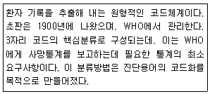
- Mesh(Medical Subject Headings)
- ICPC(International Classification of Primary Care)
- ICD(Intemational Classification of Disease)
- SNOMED
(정답률: 77%)
56. 의료기기 생물학적 안정성 시험 중 추가평가 시험항목이 아닌 것은?
- 만성독성 시험
- 세포독성시험
- 생식독성시험과 발생독성시험
- 생분해성시험
(정답률: 71%)
57. 의료기기의 용기나 외장에 필수적으로 기재해야 할 사항은?
- 판매업자의 상호 및 전화번호
- 중량 또는 포장단위
- 대표자 이메일
- 국산품의 경우 제조원(제조국 및 제조사명)
(정답률: 81%)
58. 아래에서 설명된 의료장비에서 누설전류의 안전레벨을 고르면?
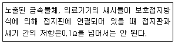
- 섀시 누절전류
- 환자 도입선에서의 누설전류
- 전지핀과 새시간의 저항
- 접지핀과 새시간의 누설전류
(정답률: 78%)
59. 등전위 접지시스템에서 마이크로 쇼크가 발생하지 않는 전위차의 크기는 얼마이하가 되어야 하는가? (단, 환자환경 2.5m 이내의 범위에서 마이크로쇼크의 허용전류를 10μA 이하로 하고, 인체를 약 1kΩ의 저항을 가지는 등가회로로 가정한다.)
- 10mV
- 50mV
- 100mV
- 500mV
(정답률: 61%)
60. 진단용 방사선 발생장치를 설치한 장소 중 외부방사선량 기준이 주당 몇 mSv이상인 곳을 방사선구역이라 하는가?
- 0.3mSv
- 0.5mSv
- 0.7mSv
- 1mSv
(정답률: 73%)
4과목: 의료기기
61. 인공 페이스메이커(인공 심박조율기)구성요소 중 심근에 고정되어 본체에서 전달된 전류를 심장에 전달하는 역할을 하는 것은?
- 전극선
- 고정핀
- 연결선
- 접속선
(정답률: 73%)
62. 선형가속기의 고주파 발진부를 구성하는 마그네트론(Magnetron)에 대한 설명으로 틀린 것은?
- 약 3000MHz의 고주파를 발생시키는 장치이다.
- 원통형으로 되어 있으며 중심에 음극이 있고 그 주변으로 몇 개의 발진 구멍을 갖추고 있는 양극으로 둘러싸여 있는 구조이다.
- 클라이스트론(Klystron)에 비해 구조가 간단하고 소형이다.
- 클라이스트론(Klystron)에 비해 수명이 길고 발진 수파수가 안정화되어 있다.
(정답률: 71%)
63. 전기수술기에서 그림 b는 지형을 위하여 발생하는 펄스를 표시한다. 그림 a는 어떤 기능을 하기 위한 파형인가?
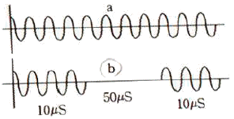
- 절단(절개)
- 굴절작업
- 지혈
- 반사
(정답률: 85%)
64. 다음 중 혈액투석에 비해 복막투석의 최대 단점은?
- 치료 시 마다 주사를 맞아야 한다.
- 매주 복막실에 방문해서 치료해야 하는 불편함이 있다.
- 신체에 카테터를 삽입한 채로 다녀야 한다.
- 형상 기계에 의존해야 하는 번거로움이 있다.
(정답률: 88%)
65. 전류를 이용하여 피부의 말초감각신경을 자극하여 다양한 원인으로 초래되는 통증을 치료하는 방법은?
- ICT
- SSP
- TENS
- FES
(정답률: 81%)
66. 다음 중 염료희석법을 통한 심박출량 측정에 필요치 않는 것은?
- 서미스터
- 감마카메라
- 신텔리이션카운터
- 광밀도계
(정답률: 73%)
67. CT에서의 화소마다 흡수정도를 나타내기 위하여 만들어진 단위는? (단, Hounsfield Unit로 물은 0으로 한다.)
- CT속도
- CT밀도
- CT균일도
- CT넘버
(정답률: 86%)
68. 혈압에 영향을 미치는 외적 용인이 아닌 것은?
- 정신적 스트레스
- 온도 및 습도변화
- 나이 및 성별
- 혈액의 점도 및 혈류
(정답률: 68%)
69. 방사선(X-선) 진단기에 의해 전자의 흐름에 6.624×10-19J의 에너지가 주어졌을 때, X-선의 빔의 주샆수는? (단, 플라크 상수 h=6.624×10-34Jㆍs이다.)
- 107Hz
- 108kHz
- 109MHz
- 1010GHz
(정답률: 76%)
70. 수액 펌프에 대한 설명으로 틀린 것은?
- 흐름 제한장치는 압력백 등의 압력 차이에 따른 약물 주입 조절을 위해 주입시스템의 기업을 일정하게 유지하기 위한 기능을 담당한다.
- 공기정화 필터는 환자의 정맥 속으로 유입되는 공기를 제거하기 위한 안정장치이다.
- 통상 신체 무게에서 1kg당 0.55cm3 정도의 공기는 신체에 해가 되기에 출분한 양이다.
- 혈액 내에 큰 기포가 있으면 출혈이 발생하기도 하며, 대형의 주입 펌프들에서는 흡수력을 이용하여 제거하기도 한다.
(정답률: 73%)
71. 초음파 측정 영상의 종류 중 심장 혈류 속도를 평가하는데 사용되는 모드는?
- A-mode
- Doppler-mode
- M-mode
- B-mode
(정답률: 85%)
72. 단극 시스템(unipolar system) 전기수술기의 이용 방법으로 적당하지 않은 것은?
- 능동전극의 횡단면을 넓게 한다.
- 대극판을 생리식염수로 적신 거즈 등으로 싸서 생채의 반대 측에 밀착시킨다.
- 수동전극(대극판) 부분은 가능한 크게 한다.
- 환자의 신체에서 ECG 전극은 안전사고의 원인아 될 수 있기에 가능한 한 제거한 상태에서 사용한다.
(정답률: 73%)
73. 다음 중 레이저의 특성이 아닌 것은?
- 열성
- 단색성
- 지향성
- 간섭성
(정답률: 77%)
74. ECG 두 전극 사이의 임피던스 변화를 측정하여 알 수 있는 생리학적 변화는?
- 호흡
- 근전위
- 맥박
- 체온
(정답률: 61%)
75. 제세동기의 에너지 형태에 대한 설명으로 틀린 것은?
- 단상파형은 전류를 한 방향으로만 흐르게 한다.
- 이중파형을 사용할 때는 에너지의 크기를 증가시킨다.
- 이중파형은 전류가 한극에서만 흐르지 않고 한극에서 흐른 전류가 다른 극으로 이동해 파형의 모양이 위아래로 흔들리는 모양이 된다.
- 이중파형 제세동기는 단상파형에 비해 크기와 무게를 줄일 수 있어 더 다양한 곳에서 사용이 가능하다.
(정답률: 77%)
76. 사로 다른 중주파 전류를 인체의 동일 지점에서 교차시키면서 두 주파수의 차이만큼 새로운 주파수 파형이 발생하는 신호를 이용하는 기기는?
- 고주파 치료기
- 저주파 치료기
- 간섭파 치료기
- 레이저 치료기
(정답률: 92%)
77. 수액펌프의 종류가 아닌 것은?
- 선형 연동펌프
- 회전형 연동펌프
- 교환형 피스통펌프
- 비교형 피스톤펌프
(정답률: 82%)
78. 방사선치료에 이용되는 방사선의 종류가 아닌 것은?
- α선
- β선
- 전자선
- 주양자선
(정답률: 77%)
79. 환자감시장치에서 측정하는 생리신호가 아닌 것은?
- 백막수
- 형중산소포화농도
- 호흡
- 근전도
(정답률: 80%)
80. PET 장치의 양전자 방사체로부터 방생되는 소멸방사선(γ선)의 위치 정보를 얻기 위한 것은?
- 동시계수회로
- 섬광체
- 광전자 증배관
- 위치신호 연산회로
(정답률: 70%)
5과목: 의용기계공학
81. 구름 베어링(볼 또는 롤러 베어링)의 특성으로 올바른 것은?
- 자가제작이 용이하다.
- 규격화되어 있어 교환성이 좋다.
- 미끄럼 베어링에 비하여 충격에 강하다.
- 미끄럼 베어링에 비하여 소음이 적다.
(정답률: 71%)
82. 다음 중 용도에 따라서 분류한 보조기가 아닌 것은?
- 의료용 보조기
- 부하분산용 보조기
- 동적 보조기
- 기능적 골절치료용 보조기
(정답률: 78%)
83. 다음 중 음파의 반사나 굴절을 결정짓는 요소는?
- 주파수
- 음향 임피던스
- 진폭
- 파장
(정답률: 85%)
84. 수산화인회석의 의학적 응용이 아닌 것은?
- 인공치근
- 윤활제
- 인공관절
- 골현성 촉진제
(정답률: 88%)
85. 골조직 재생을 위하여 PLGA와 하이드록시 아파타이트(HA)를 동일한 무게비율로 혼합한 물질을 사용하여 조직공학용 뼈대(Scaffold)를 제작하였다. 이 뼈대의 공극률(porosity)이 80%이고 공극의 크기가 150μm이라면 이 조직공학용 뼈대의 겉보기 비중은 몇 g/cm3인가? (단, PLGA의 비중 : 1g/cm3, 하이드록시아파타이트(HA)의 비중:3g/cm3이다.)
- 0.35
- 0.83
- 2.00
- 3.20
(정답률: 33%)
86. 생체조직의 초음파 전 파속도의 대소 관계로 올바른 것은? (단, 공기는 0℃, 1기압이라고 가정한다.)
- 공기＞혈액＞두개골
- 간장＞근육＞혈액
- 두개골＞근육＞간장
- 간장＞공기＞근육
(정답률: 85%)
87. 유체의 점성에 관한 설명 중 틀린 것을 모두 나열한 것은?
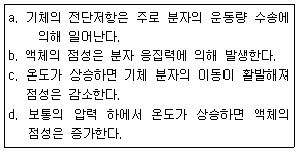
- a, b
- a, c
- b, c
- c, d
(정답률: 53%)
88. 생체재료의 기계적 특성을 평가하기 위한 시험방법이 아닌 것은?
- 인장-압축 시험
- 접촉각 시험
- 마모 시험
- 피로 시험
(정답률: 81%)
89. 생체불활성 세라믹스가 사용되는 용도는?
- 인공 귀
- 인공 혈관
- 인공 관절
- 인공 심장
(정답률: 71%)
90. 인공 혈관으로 사용되는 대표적인 고분자 재료는?
- PP
- PLA
- PE
- PET
(정답률: 62%)
91. 고주파의 전자장이 생체에 미치는 영향 중 열적작용 효과에 대한 설명으로 틀린 것은?
- 150mW/cm2의 강도에서 눈에 영향을 미쳐 백내장을 일으킨다.
- 150mW/cm2의 강도에서 고환에 영향을 미쳐 불임증을 일으킨다.
- 세포에 대한 자극 작용은 많이 발생하고, 열적작용에 따르는 온도하강이 발생한다.
- 열의 흡수는 비 흡수율(SAR)로 표시한다.
(정답률: 83%)
92. 비중이 7.87g/cm3인 철(Fe)이 산화되어 비중이 5.95g/cm3인 일산화철(FeO)이 되었을 때, 체적변화율은 약 몇 %인가? (단, 철의 원자량 55.85g/mol이고 산소의 원자량은 16g/mol이다.)
- 24
- 28
- 41
- 70
(정답률: 62%)
93. 임플란트나 생체재료에 대한 특이적 기억(specific memor)에 의하여 항원항체 반응이 병적으로 나타나는 과민반응(hypersensitivity)은?
- 알레르기
- 방어반응
- 거부(rejection) 반응
- 자가면역(autoummunity)반응
(정답률: 79%)
94. 척추동물의 경조직에 다량으로 들어있는 성분으로서 인공적으로 제조할 경우에도 새로운 뼈와 견고하게 결합하는 특성을 가지는 것은?
- 수산화아파타이트(수산화인회석)
- 바이오글라스
- 세라본
- 지르코니아
(정답률: 84%)
95. 인공심박조율기(pacemaker)에 직경 0.1mm, 길이 12mm 크기의 은선이 사용된다. 은의 비저항(ρe)이 1.6×10-8Ωm이라면, 이 은선의 전기저항은 몇 Ω인가?
- 0.⑤1
- 0.061
- 0.0204
- 0.0244
(정답률: 52%)
96. 방사선량의 한계치가 가장 낮은 조직은?
- 생식선
- 갑상선
- 수족
- 피부
(정답률: 67%)
97. 운동 조절 검사에서 측정할 수 없는 것은?
- 정지 및 자세를 유지하기 위한 동작에서 양쪽 다리에 가해지는 힘의 대칭성
- 발판이 움직이고 난 후 자세를 유지하기 위한 동작까지의 시간인 잠복기
- 반복상황에서의 적응의 정도를 나타내는 적응도
- 부정확한 시각의 움직임
(정답률: 89%)
98. 방사선 치료에 사용되는 60Co 선원으로부터의 조사선량이 100cm에서 100R/min이다. 50cm에서의 조사선량은 몇 R/min인가?
- 50
- 100
- 200
- 400
(정답률: 40%)
99. 생채조직에 이식한 후 일어나는 반응 중 이식된 재료가 시간이 경과함에 따라 점차 분해되거나 생체조직에 흡수되어 소멸되는 재료를 무엇이라 하는가?
- 생체활성재료
- 생체불활성재료
- 생체재흡수재료
- 생체복합재료
(정답률: 84%)
100. 의용세라믹 재료가 갖는 일반적인 특성을 잘못 설명한 것은?
- 불활성이다.
- 압축강도가 약하다.
- 성형 및 가공이 매우 어렵다.
- 생체적합성이 우수하다.
(정답률: 77%)
입력 측 임피던스가 매우 작고, 출력 측 임피던스가 매우 작으며, negative feedback이 됐을 때, 반전 입력과 비 반전 입력의 전압이 같다는 것은 Operational Amplifier의 특징입니다.